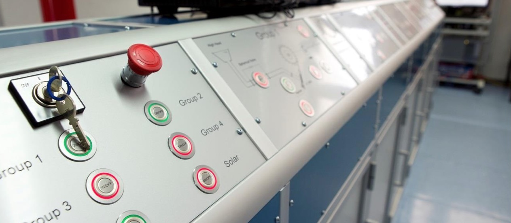
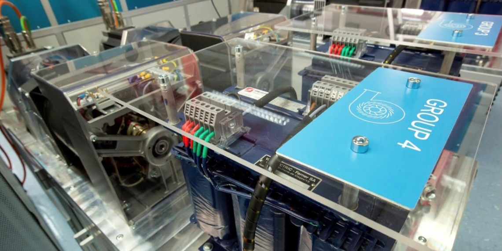

The dispatch is a reduced-scale infrastructure to reproduce the injection of electricity into the high-voltage grid coming from a mix of renewable sources.

Several production units, two power lines are rescaled (voltage reduced to 400 V and power levels reduced by a factor of 5000) to all fit into a single room. Actual industrial rotating machines or commercial inverters reproduce the injection into the grid coming from either 100 MW hydro, 15 MW solar or 3 MW wind production sites.

Hydro: The four production groups of an existing 65-kV, 100-MW hydroelectric system, as well as the relative overhead transmission lines, are reproduced in smaller size. The full-size Pelton and Francis turbines (two units per each) are emulated by means of motors driven by programmable drives. Solar: The contribution coming from either 1-kWp actual photovoltaic panels or from a 3-kWp programmable DC source can be added to the production mix via a three-phase inverter, modeling up to 15-MWp of real-scale local solar injection. Wind: 3-MW generation, well representing the planned expansion of wind energy in the region, is reproduced by an indoor model of a wind turbine of horizontal axis (Fig. 4), controlled by a programmable drive, according to the production curve of an actual wind generator.
A compact mobile test bench has been realized to reproduce the situation of a protection engineer faced to a typical electrical primary substation (Fig. 7). The bench hosts some of the most common digital relays of different manufacturers. Proper instrument transformers have been specifically designed to acquire current and voltage measurements from the 400-V GridLab Dispatching infrastructure.